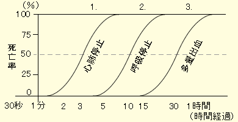

近年、問題として発生しているのは、救急車の悪用問題で、本当に緊急の事態において救急車が出動できないという事案が多々発生している点である。 もちろん、そのような乱用を行わないようにすることは大事だが、もしそのような事態が起こってしまったような場合において、人命を守るために、AEDの利用は有効な手段となる。そこで、例として神戸市におけるAEDの設置状況についてまとめてみた。
まず、現代において、一般的な心肺蘇生の方法として挙げられるのが、心臓マッサージとAEDによるものである。まず、心肺蘇生の必要性について考える。

この図は、カーラーの救命曲線と呼ばれるものであり、心肺停止、呼吸停止、多量出血に対しての経過時間と死亡率の関係性について描かれたものである。これを見ると、心肺停止から3分で死亡率は50%、5分経過するとほぼ100%に達してしまう。つまり、心臓が止まってしまった場合においては、一刻も早い対策が必要である。
これで心肺蘇生の重要性は理解できただろう。では何故AEDが必要なのかという点である。道具が必要ない心臓マッサージだけで十分ではないかという疑問が残る。
しかし、心臓マッサージは、正しい方法で行わなければ効果が薄い。場合によっては患者を傷つける場合もあるし、その場に子供しかいない場合、力が十分でない可能性もある。そのような場合において、AEDが効果を発揮するのである。だが、心臓マッサージをすべきではないというわけではなく、正しいやり方を学んでおく、ということも重要であり、その上でAEDを使用する、といった風に行うのが最善である。
続いて、例に挙げる神戸市に関するデータを各区別にまとめたものである。
| 地区 | 人口(人) | 老年人口比率 | 交通事故(件) | AED設置数 |
|---|---|---|---|---|
| 垂水 | 219'333 | 24.8% | 1001 | 158 |
| 須磨 | 163'395 | 25.2% | 565 | 225 |
| 長田 | 97'938 | 29.6% | 552 | 137 |
| 兵庫 | 106'507 | 28.4% | 613 | 144 |
| 中央 | 131'469 | 23.6% | 1088 | 297 |
| 灘 | 135'952 | 22.6% | 537 | 283 |
| 東灘 | 213'725 | 19.8% | 576 | 284 |
| 北 | 221'316 | 23.2% | 944 | 274 |
| 西 | 246,864 | 18.2% | 1662 | 269 |
この表では、老年人口比率と交通事故件数を例としてまとめてみた。このような数字だけでは特にといった判断は難しいかもしれない。よって、以下の図と照らし合わせて考えてみたい。
上の人口などが書かれた表には、都合上、面積は載せていない。そこで、下のグラフに人口と、AEDの設置個数(両方とも1km当たりで表示)を載せてみた。
まず注目すべきが垂水区である。他の８つの区が1kmあたり、人口＜AEDであるのに対し、垂水区のみ人口＞AEDである。決して事故の件数が少ないわけでもなく、老年人口比率が他と比較して圧倒的に低いわけでもない。しかし少ない。明らかに少ない。何か設置できない理由があるのかと考えられるほどに少ない。この点に関してはもう少しAEDを増やすべきなのではないか。
つづいて考えたいのは、西区と北区に関してである。こちらは人口密度、AEDの設置数ともに圧倒的に少ない。この２つの区は、残りの７つの区と比べると面積がかなり広いのである。また、人口の密集地域と過疎地域の差が非常に大きいのもこの２つの区の特徴でもある。しかしあまりにも少ないようにも感じられる。もう少し設置個所を増やしてもいいのではないか。
AEDは人命救助において非常に重要なものであるが、一部の地域ではかなり設置数が少ない場合もある。確かに人の多い地域ではそれらが必要になるかもしれないが、人が少ないからといってそれらが不要であるわけではない。いつ、どこで不測の事態が起こるか、もしそのような事態に陥ってしまった場合にどうすべきか。そういった状況に対して事前にしっかりと対策を立てるべきである。